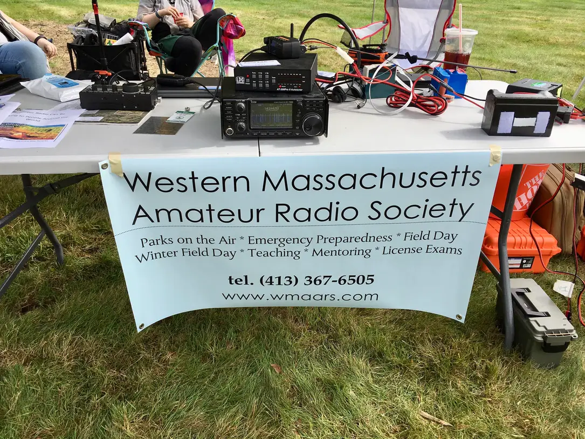

events
We Will have a flea market table at

Winter Field Day
January 25, 2025 at 2:00 PM EST - January 26, 2025 at 1:59 PM EST
Past Events
WMAARS will be doing a demonstration of Morse Code on 9/28/2024 at:
Winter Field Day
January 27, 2024 at 2:00 PM EST - January 28, 2024 at 1:59 PM EST
Winter Field Day is held the last full weekend in January. For 2024, it will be held on January 27th and 28th. The 24-hour operational period starts at 1900 UTC on Saturday, the 27th, and ends at 18:59 UTC on Sunday, the 28th. Stations may begin setting up no earlier than 19:00 UTC (2 pm EST) on the Friday before.
This Weekend (October 13 & 14, 2023) WMAARS, will be at near-fest in Deerfield, NH.

WMAARS was just at:
Leyden Ready Fest, 09/30/2023

More events to be announced soon.